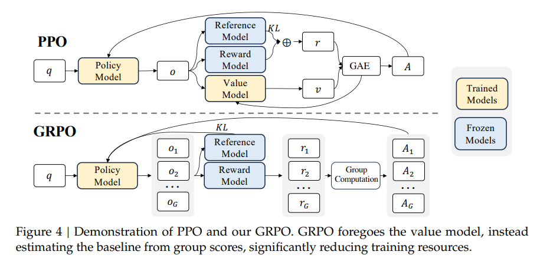
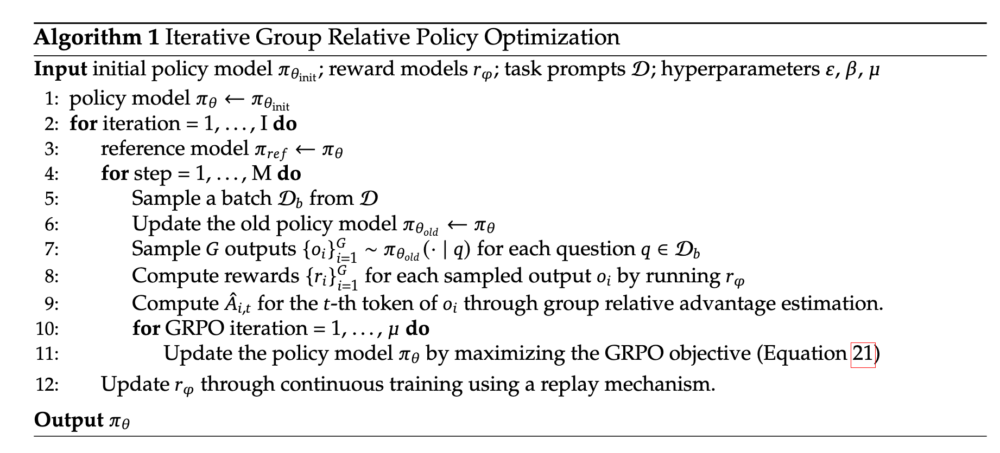

GRPO
GRPO起自deepseekmath，在deepseek-R1中也大放光彩。
看到复旦某组开源了一个简单的仅~200行的关于GRPO的项目simple_GRPO，故决定学习并写写。
GRPO是PPO的改进。

具体流程图：

流程看上去有点复杂，我们可以直接来看代码。
loss 部分
1 | |
无偏小方差KL
这里使用的并不是传统的KL，而是使用了一个无偏小方差KL，即$KL=rlogr-(r-1)$
传统的KL：
$$
K L [ q, p ]=\sum_{x} q ( x ) \operatorname{log} \frac{q ( x )} {p ( x )}=E_{x \sim q} [ \operatorname{log} \frac{q ( x )} {p ( x )} ]
$$
如何构建一个好的估计？一个好的估计量是无偏的（它有正确的均值）并且具有低方差。
一个无偏估计量k1是$k1=log\frac{q(x)}{p(x)}=-log r$，但他有高方差，因为他对于因为它对于一半的样本是负的，而 KL 总是正的。
另一个低方差但存在偏差的估计量k2是$k2=\frac{1}{2}(log\frac{q(x)}{p(x)})^2=\frac{1}{2}(logr)^2$。
它的期望可以从f-divergence上考虑，其定义为凸函数f的$D_{f} ( p, q )=E_{x \sim q} [ f ( \frac{p ( x )} {q ( x )} ) ] $。
而
$$
D_{f} ( p_{0}, p_{\theta} )=\frac{f^{\prime\prime} ( 1 )} {2} \theta^{T} F \theta+O ( \theta^{3} )
$$
其中F是$p_\theta=p_0$处的Fisher information matrix。
$E_{q} [ k_{2} ]=E_{q} [ \frac{1} {2} ( \operatorname{log} r )^{2} ]$，而$\frac{1}{2}(log(x))^2$和传统KL对应的$-log(x)$具有相同的$f’'(1)=1$。
要满足
@ingambe在这里尝试了把KL项去掉了，但也取得不错的效果。SimPO也删去了reference model，且取得了比DPO更好的结果。
这也给了我们一个反思：既然GRPO在PPO的基础上去除掉了value model，那reference model也是必要的吗？我们可以完全去掉它吗？
分析
实际上无clip
另外，实际是代码实现上GRPO 的损失没有 clip，也直接假设ratio=1，（ TRL 源码也是这样做的。）
这是因为只update一次，如deepseekmath中所说。
“The policy model only has a single update following each exploration stage”——deepseekmath中4.2. Training and Evaluating DeepSeekMath-RL
所以old policy和new policy无变化。